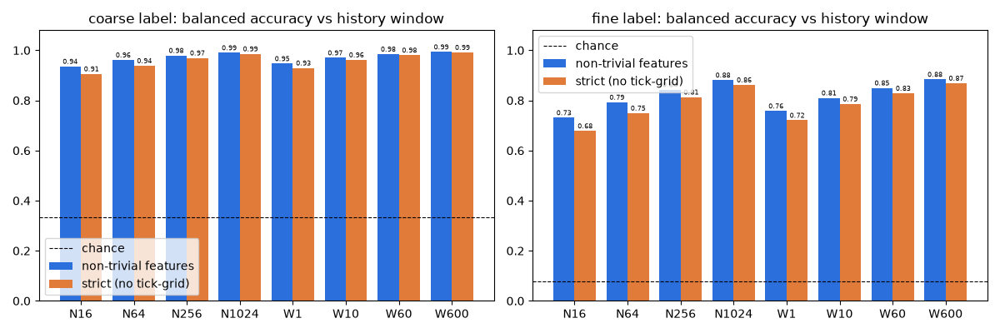
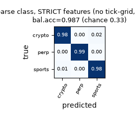
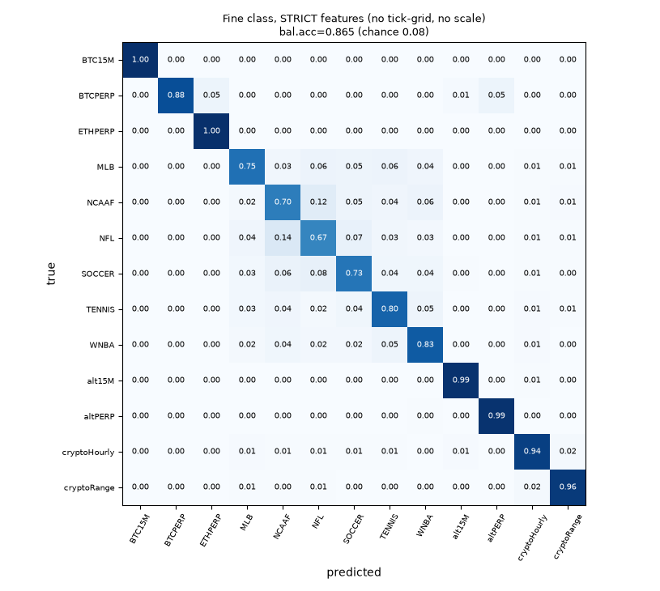
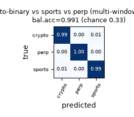
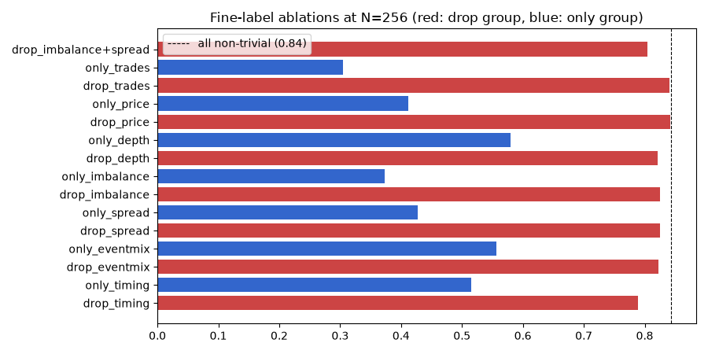
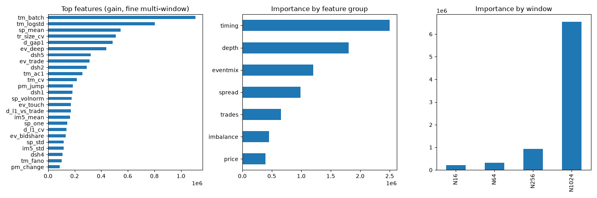
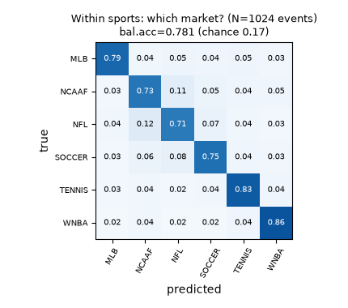
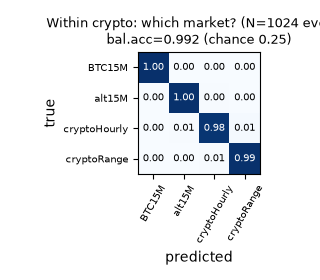
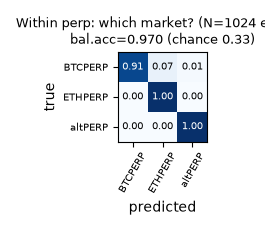

Market-type classifiers
Can a model tell which kind of market it is looking at from book behaviour alone, after we remove volume, price level and tick size?
What we found
- Market family is almost perfectly identifiable from scale-free book behaviour. Crypto binaries, sports and perps are separated with 0.906 balanced accuracy from just the last 16 events and 0.986 from the last 1,024, using the strict set (no volume, rate, depth level, price level or any tick-size-dependent quantity). Chance is 0.33.
- Individual markets are also distinct. Over 13 fine classes (chance 0.08), strict features reach 0.68 (16 events), 0.75 (64), 0.81 (256) and 0.86 (1,024). Clock windows behave the same way: 0.72 with 1 s of history up to 0.87 with 10 minutes. More history always helps, and there is no plateau yet at 1,024 events.
- BTC 15m vs sports is essentially perfect (0.995 with 16 events, 1.000 with 256). BTC 15m is the most distinctive market: 100% recall in the confusion matrix.
- Where the confusion is: almost entirely within sports (NFL↔NCAAF 12–14%, otherwise spread evenly across sports). Within crypto the products separate at 0.99; within perps at 0.97 (BTC perp is sometimes taken for ETH or alt perps). Sports-only classification reaches 0.78 against a 0.17 chance rate, so sports leagues still have their own signature, just a weaker one.
- It is not one magic feature. Removing imbalance costs 1.8 points, spread 1.8, imbalance and spread together 3.8, timing 5.4 (the largest), depth 2.2. Each group on its own is far weaker than all together (timing alone 0.52, depth alone 0.58, imbalance alone 0.37). The top individual features are batching (share of events within 1 ms), spread of log inter-arrival times, trade-size dispersion, level gaps and depth shape.
- Sanity check on trivial features: rate, absolute depth, price level and relative tick on their own give 0.90 coarse / 0.62 fine. Adding them to the non-trivial set only moves fine accuracy from 0.84 to 0.88. The structural result does not depend on them.
More history, better identification

| window | coverage | coarse · non-trivial | coarse · strict | fine · non-trivial | fine · strict |
|---|---|---|---|---|---|
| N16 | 1.000 | 0.936 | 0.906 | 0.731 | 0.678 |
| N64 | 1.000 | 0.961 | 0.939 | 0.793 | 0.749 |
| N256 | 1.000 | 0.979 | 0.969 | 0.843 | 0.813 |
| N1024 | 1.000 | 0.990 | 0.986 | 0.881 | 0.862 |
| W1 | 0.691 | 0.947 | 0.929 | 0.758 | 0.721 |
| W10 | 0.885 | 0.970 | 0.962 | 0.810 | 0.786 |
| W60 | 0.955 | 0.985 | 0.981 | 0.850 | 0.829 |
| W600 | 0.995 | 0.994 | 0.992 | 0.884 | 0.869 |
Confusion matrices



Which features carry the signal

| test | balanced accuracy | macro F1 |
|---|---|---|
| N256_with_trivial | 0.991 | 0.991 |
| N256_trivial_only | 0.895 | 0.890 |
| N256_with_trivial | 0.875 | 0.875 |
| N256_trivial_only | 0.619 | 0.602 |
| N256_drop_timing | 0.789 | 0.780 |
| N256_only_timing | 0.516 | 0.501 |
| N256_drop_eventmix | 0.823 | 0.815 |
| N256_only_eventmix | 0.556 | 0.537 |
| N256_drop_spread | 0.825 | 0.817 |
| N256_only_spread | 0.428 | 0.403 |
| N256_drop_imbalance | 0.825 | 0.815 |
| N256_only_imbalance | 0.373 | 0.360 |
| N256_drop_depth | 0.821 | 0.816 |
| N256_only_depth | 0.580 | 0.552 |
| N256_drop_price | 0.842 | 0.836 |
| N256_only_price | 0.412 | 0.383 |
| N256_drop_trades | 0.841 | 0.834 |
| N256_only_trades | 0.304 | 0.275 |
| N256_strict | 0.813 | 0.804 |
| N256_drop_imb_spread | 0.805 | 0.793 |
| N1024_drop_timing | 0.837 | 0.832 |
| N1024_only_timing | 0.609 | 0.597 |
| N1024_drop_eventmix | 0.865 | 0.859 |
| N1024_only_eventmix | 0.636 | 0.620 |
| N1024_drop_spread | 0.868 | 0.861 |
| N1024_only_spread | 0.506 | 0.483 |
| N1024_drop_imbalance | 0.869 | 0.861 |
| N1024_only_imbalance | 0.423 | 0.409 |
| N1024_drop_depth | 0.867 | 0.863 |
| N1024_only_depth | 0.649 | 0.628 |
| N1024_drop_price | 0.879 | 0.874 |
| N1024_only_price | 0.488 | 0.465 |
| N1024_drop_trades | 0.881 | 0.875 |
| N1024_only_trades | 0.376 | 0.354 |
| N1024_strict | 0.862 | 0.855 |
| N1024_drop_imb_spread | 0.852 | 0.843 |

Within one family



| test | label | window | features | bal_acc | chance |
|---|---|---|---|---|---|
| N256_with_trivial | coarse | N256 | all_incl_trivial | 0.991 | 0.333 |
| N256_trivial_only | coarse | N256 | trivial_only | 0.895 | 0.333 |
| N256_with_trivial | fine | N256 | all_incl_trivial | 0.875 | 0.077 |
| N256_trivial_only | fine | N256 | trivial_only | 0.619 | 0.077 |
| multiwindow | coarse | N16-1024 | nontrivial | 0.991 | 0.333 |
| multiwindow | fine | N16-1024 | nontrivial | 0.882 | 0.077 |
| multiwindow_strict | coarse | N16-1024 | strict | 0.987 | 0.333 |
| multiwindow_strict | fine | N16-1024 | strict | 0.865 | 0.077 |
| within_sports | fine | N1024 | within_sports | 0.781 | 0.167 |
| within_crypto | fine | N1024 | within_crypto | 0.992 | 0.250 |
| within_perp | fine | N1024 | within_perp | 0.970 | 0.333 |
| btc15m_vs_sports_N16 | btc_vs_sport | N16 | nontrivial | 0.995 | 0.500 |
| btc15m_vs_sports_N64 | btc_vs_sport | N64 | nontrivial | 0.999 | 0.500 |
| btc15m_vs_sports_N256 | btc_vs_sport | N256 | nontrivial | 1.000 | 0.500 |
| btc15m_vs_sports_N1024 | btc_vs_sport | N1024 | nontrivial | 1.000 | 0.500 |
| mlp_N256_fine | fine | N256 | nontrivial | 0.851 | 0.077 |
Method
LightGBM multiclass with class-balanced weights; at most 20,000 windows per market class. The split is by market-day (hash of ticker and date), so no market appears in both train and test. Non-trivial = all features except the trivial group. Strict additionally drops the seven features whose value depends on the price grid (spread in ticks, share of one-tick spreads, spread dispersion, level gaps, mid-jump size, deep and inside-spread add shares). Balanced accuracy is the mean per-class recall, so chance is 1/number of classes.